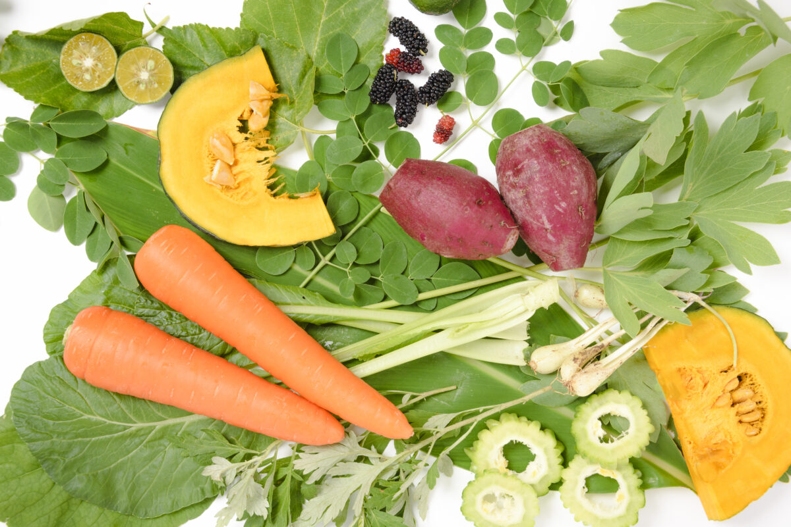
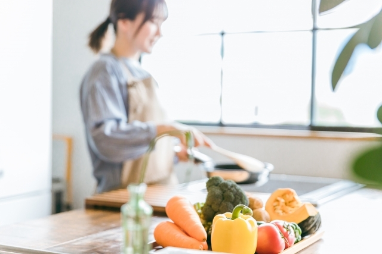

それって本当？野菜パウダー栄養ないの？その疑問にお答えします。

手軽にお菓子や、料理を華やかに彩ってくれるオキナワパウダーフーズの「まるっと野菜パウダー」。
野菜嫌いな方にも抵抗なく野菜の栄養を採ることができるとお喜びの声を頂戴しています。
外出や運動する機会が減りがちな昨今、バランスのとれた食事は生活するうえで大切なこととなりました。
「まるっと野菜パウダー」に栄養があるなら、ぜひ、有効に活用したいところ。
しかしながら、その野菜パウダーに栄養はないのではないか？
と不安に思われている方もいらっしゃるようです。
果たしてどうなのでしょうか？
結論からお話しますと、野菜パウダーにも栄養があります。
生野菜と同程度、あるいはそれ以上含まれていることもございます。
その理由はこれからご説明しますが、端的にいうと生野菜を野菜パウダーにする過程で、
栄養素が濃縮されるからというのがあります。
では、どのように濃縮されるのか、実際に見てみましょう！
生野菜と野菜パウダーの違い
生野菜から野菜パウダーに加工していくには、
蒸したあと加熱するという工程が必要になります。
加熱しながら水分を飛ばすのです。
野菜を蒸すなど加熱すれば、成分も変わってきます。
加工によって減少する栄養成分もあれば、水分が抜ける分、
凝縮されて増加する栄養成分もあります。
その水分を抜く過程でビタミンCは熱に弱く減少してしまいます。
逆に乾燥によって水分が蒸発する分、炭水化物、たんぱく質、
脂質といった3代栄養素は増加します。
ミネラル、食物繊維の多くが増加しますので、体調維持には大活躍します。
では、具体的にどのような栄養があるのか、実際に見てみましょう
オキナワパウダーフーズの紅芋パウダーは栄養が凝縮されています。
その栄養素は小さじ1杯で紅芋スティック4本分と同じ！
パウダー100gで考えると
ポリフェノールの含有量はワインの7～9倍！
食物繊維はごぼうの約2.2倍！
カルシウムは小松菜の約1.8倍！
月桃パウダーの小さじ1杯は、月桃の葉約1枚分と同じ栄養素が含まれています。
パウダーにすると100gの栄養素は
ポリフェノール含有量は赤ワインの約12倍！
マグネシウムはほうれん草の約5.1倍！
カルシウムはモロヘイヤの約2.6倍！
パウダーにすることで減少する栄養素もある一方、
加熱して凝縮することでほんの少しの量で栄養素を摂取することができます。
普段なかなか口にすることができない沖縄の健康食材も、
買うと早く食べないといけない生の野菜なども、
パウダーにすることで日持ちして、持ち運びもラクラク！
野菜パウダーをうまく生活に取り入れることで、
より多くの栄養素を摂取することができます。
「野菜パウダーには栄養ない」とは言わせません。
まとめ

今回は野菜パウダーの栄養についての説明でしたが、いかがだったでしょうか？
水分を省き、栄養素はそのまま残しているので
「100gあたりの栄養素を見て驚いた」という方もいるのではないでしょうか。
野菜パウダーは料理のアクセントとしてや
お菓子の色付けとして使用するというお客様もいます。
手軽に栄養がとれて料理も楽しくなります。
日常に素敵なアクセントをもたらしてくれるのも野菜パウダーの良いところですよ♪